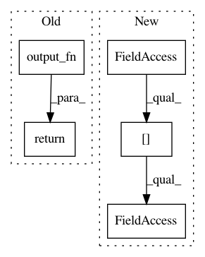

cb112c4dfca92159520bb7b2c8a95a94ab38239c,python/eight_mile/tf/layers.py,BiLSTMEncoder,call,#BiLSTMEncoder#Any#,398
Before Change
inputs, lengths = tensor_and_lengths(inputs)
rnnout, hidden = tf.nn.bidirectional_dynamic_rnn(self.fwd_rnn, self.bwd_rnn, inputs, sequence_length=lengths, dtype=tf.float32)
rnnout = tf.concat(axis=2, values=rnnout)
return self.output_fn(rnnout, hidden)
@property
def requires_length(self):
return self._requires_length
After Change
In pattern: SUPERPATTERN
Frequency: 3
Non-data size: 5
Instances
Project Name: dpressel/mead-baseline
Commit Name: cb112c4dfca92159520bb7b2c8a95a94ab38239c
Time: 2019-10-17
Author: dpressel@gmail.com
File Name: python/eight_mile/tf/layers.py
Class Name: BiLSTMEncoder
Method Name: call
Project Name: dpressel/mead-baseline
Commit Name: bfd0068e7a0922c06cdeff346a6c6339f98ae256
Time: 2019-11-19
Author: blester125@gmail.com
File Name: python/eight_mile/tf/layers.py
Class Name: BiLSTMEncoder1
Method Name: call
Project Name: dpressel/mead-baseline
Commit Name: 19d2bbc7d6e70836f34b83ac7702a0477e4b97b0
Time: 2019-11-19
Author: blester125@gmail.com
File Name: python/eight_mile/tf/layers.py
Class Name: BiLSTMEncoder1
Method Name: call